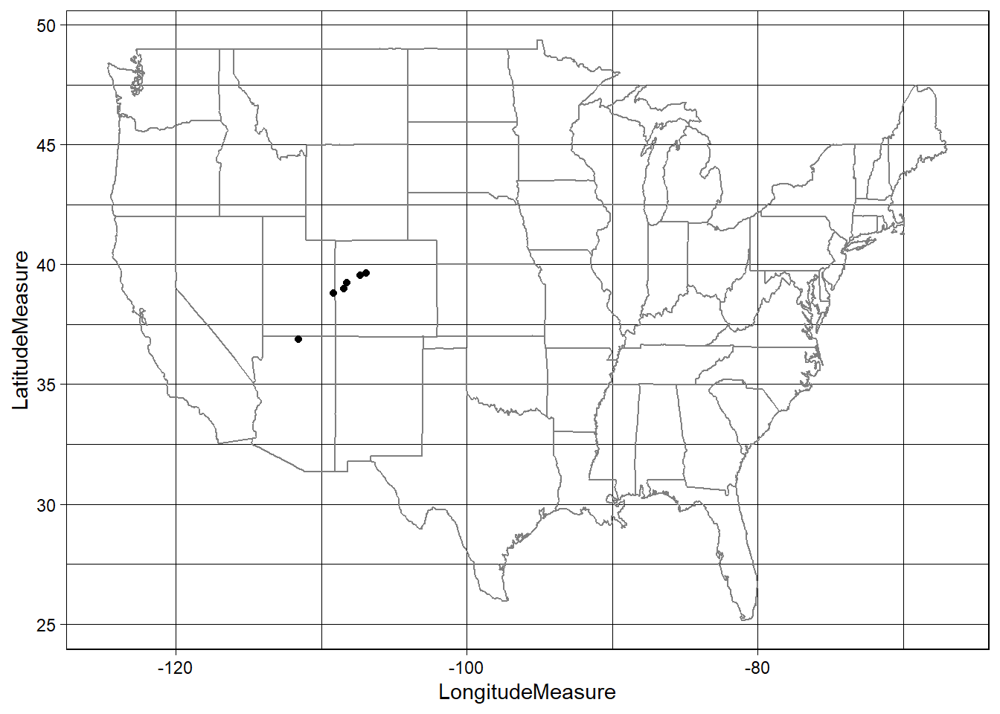
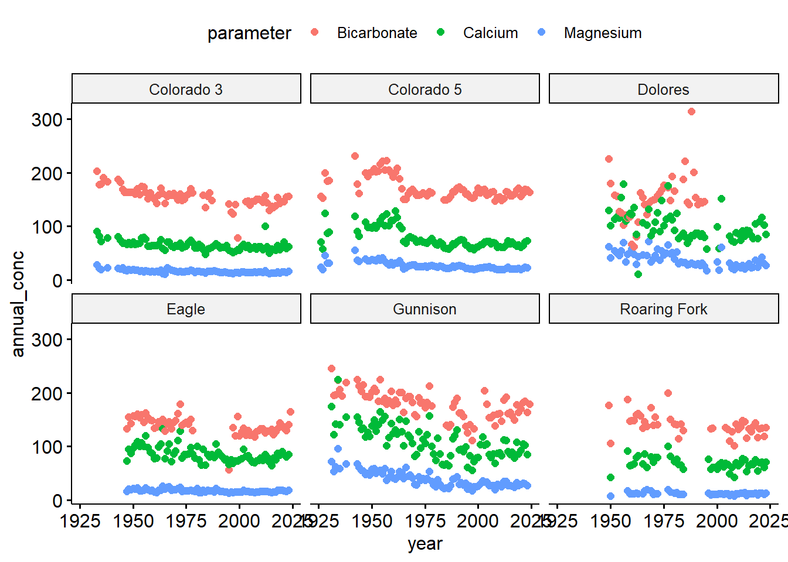

Motivation The balance between bicarbonate and Mg+Ca in water determines hardness, alkalinity, and pH stability, with direct implications for ecosystem health, water treatment, and infrastructure maintenance. The sum of magnesium and calcium concentrations is a key factor in determining water hardness which can impact aquatic ecosystems, water treatment, and infrastructure due to scaling.
⬆️ bicarbonate + ⬆️ Ca/Mg: Indicates water passing through carbonate-rich geology (limestone/dolomite), leading to high hardness but good buffering capacity.
⬇️ bicarbonate + ⬆️ Ca/Mg: Suggests non-carbonate sources of Mg and Ca, potentially from industrial pollution or weathering of silicate rocks.
⬆️ bicarbonate + ⬇️ Ca/Mg: Could be influenced by inputs like agricultural runoff or natural dissolution of bicarbonates from atmospheric CO₂.
In this lab, we are interested in understanding the relationship between bicarbonate and magnesium/calcium in the Colorado River Basin using a set of gages that have been active over the last ~100 years
Namely, we are interested in:
The trend of Bicarbonate over time The relationship of Bicarbonate to Magnesium + Calcium along the river The strength of a predictive model for Bicarbonate using the sum Magnesium Calcium
Data Import & Setup
library(tidyverse)
── Attaching core tidyverse packages ──────────────────────── tidyverse 2.0.0 ──
✔ dplyr 1.1.4 ✔ readr 2.1.5
✔ forcats 1.0.0 ✔ stringr 1.5.1
✔ ggplot2 3.5.2 ✔ tibble 3.2.1
✔ lubridate 1.9.4 ✔ tidyr 1.3.1
✔ purrr 1.0.4
── Conflicts ────────────────────────────────────────── tidyverse_conflicts() ──
✖ dplyr::filter() masks stats::filter()
✖ dplyr::lag() masks stats::lag()
ℹ Use the conflicted package (<http://conflicted.r-lib.org/>) to force all conflicts to become errors
## Make a map!ggplot(site.info, aes(x = LongitudeMeasure, y = LatitudeMeasure)) +borders("state") +geom_point() +theme_linedraw()

Data I/O
We can use the dataRetrieval package to download data from the USGS NWIS database. This provides API access to the USGS NWIS database opposed to reading from a file.
`summarise()` has grouped output by 'SiteID', 'SiteName', 'year'. You can
override using the `.groups` argument.
#> `summarise()` has grouped output by 'SiteID', 'SiteName', 'year'. You can#> override using the `.groups` argument.# Visualize the dataggpubr::ggscatter(conc.annual, x ="year", y ="annual_conc",color ="parameter") +facet_wrap(~SiteName)

Modeling
# Long to wide, adding dataconc.wide = conc.annual |>pivot_wider(names_from = parameter, values_from = annual_conc) |>mutate(MgCa = Magnesium + Calcium)shapiro.test(log(conc.wide$Calcium))
Shapiro-Wilk normality test
data: log(conc.wide$Calcium)
W = 0.93671, p-value = 7.274e-13